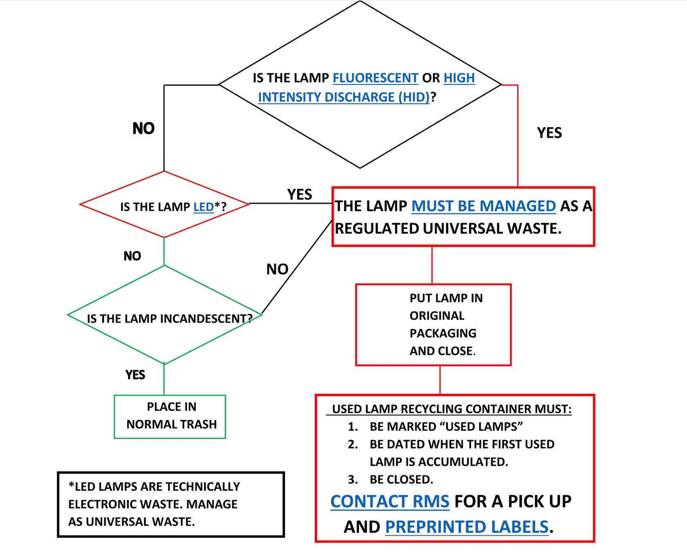
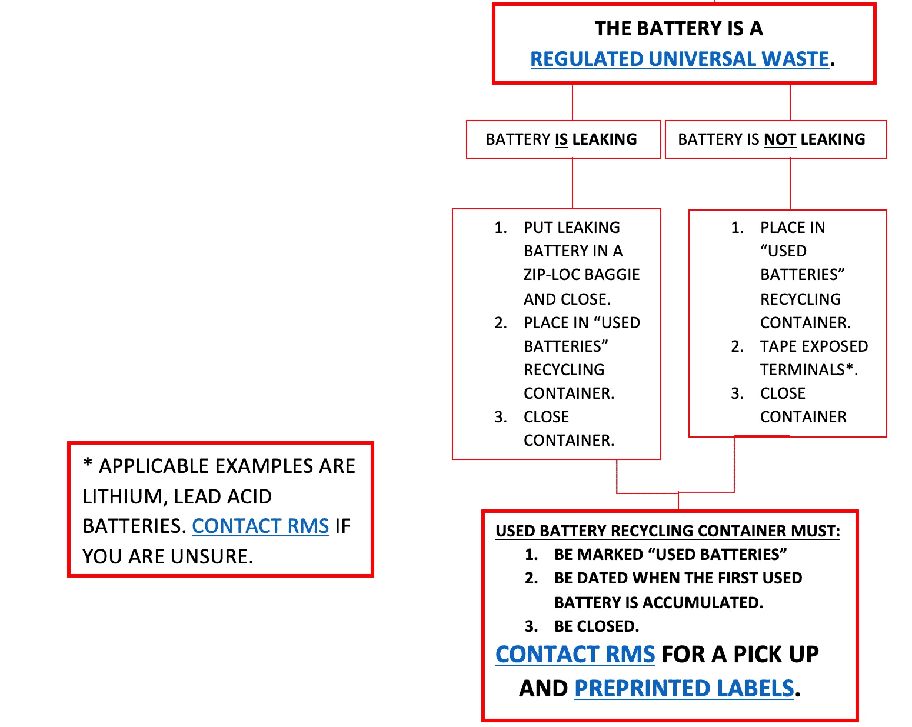

Chapter 5 Technologies
Under construction.
5.1 Lab
5.1.2 Lab waste
- Chemicals
- The list of Non-Haz Chemicals. These can be disposed of in the lab or work area.
- Ethanol is counted as hazardous waste. They will be accumulated at SAA.
- When a container in your SAA is full, fill out a CHEMATIX waste card and affix it to the chemical in SAA, and then submit a CHEMATIX pick-up worksheet. Hazardous Waste Container Label
- Used Oil also goes SAA
- Autoclave
- We sometimes use autoclave to kill termites.
- Only use blue or clear autoclave bags with no markings.
- Universal waste
- Lamps should be closed in containers such as boxes or plastic bags and labeled. See here if broken. Call RMS (334-844-4870) immediately after changing out lamps for pick-up.
- Batteries are accumulated in a container labeled “used batteries” and put the start date. Call RMS (334-844-4870) for pick-up.
- Mercury-Containing Equipment (MCE) should be closed in a spill-proof container labeled “Used MCE”. Call RMS for pick-up.
 
Electronics: call the Waste Reduction and Recycling Department
Computer-related items: call Surplus
Glass
- Broken glass should be stored in clearly marked cardboard boxes, plastic jugs, etc.
- Lab personnel are responsible for taking broken glass to the trash.
5.3 Hardware
5.3.2 Raspberry Pi
Setup for timelasp imaging:
raspberry pi 4 ModelB 4GB RAM, camera module v2.1
setup of raspberry pi (download image file and use balenaEtcher) ref
install RPi-Cam-Web-Interface ref1; ref2
The Interface’s screen resolution is determined by the video settings, but the resolution when taking photos can be set separately. Therefore, when taking photos, it is conveninent to set the video to 1 FPS and match its resolution to that of the photos.
5.4 Data management practices
5.4.1 Naming files
Here are some rules when you name files
- Use “YYMMDD” format when indicating date. This is useful when
sorting.
- 👍 : 240718_draft_termite_tunnel.docx
- 👎 : 071824_draft_termite_tunnel.docx
- Never use ” ” to separate content. Use “_” instead.
- 👍 : draft_termite_tunnel.docx
- 👎 : draft termite tunnel.docx
- The name of the root folder of Microsoft OneDrive has a space (e.g.,
OneDrive - Auburn University), which makes us crazy. This
link
provides a good solution. Here are summary of what we will do.
- Open the command prompt as administrator
- Navigate to the parent folder of your current OneDrive folder
- execute this command:
mklink /J OneDrive_Auburn "OneDrive - Auburn University" - You may modify “OneDrive_Auburn” and “OneDrive - Auburn University” as you want
- Now you can access to OneDrive from “OneDrive_Auburn”. From now on, just open all your files from the junction folder, not the OneDrive folder.
5.4.2 OneDrive
Working data, codes, and manuscripts will be saved in OneDrive. Download
OneDrive
and sign in as an AU account to OneDrive. Also, see the above to remove
space from the OneDrive root folder.
I expect working project folders to be structured as follows (example).
- OneDrive_Auburn
- Projects
- mic_ner_tandem_run
- draft
- analysis
- codes
- data_raw
- data_fmt
- output
- mic_ner_tandem_run
- Projects
where we put draft-related items in draft and analysis-related items in analysis. The entire project folder (here, mic_ner_tandem_run) will be organized by git and github.
5.4.3 Box
We use Box to store larger datasets and finished projects. Do not put currently working projects. Apparently, Box causes problems coping with GitHub and RStudio as of 240906. This will change in the future.
5.4.4 Git and Github
Git is version control system, used for tracking code changes. Github is a web service using Git. These are very strong tools to work on coding. This Lab Manual and Lab Website are created and managed by Github.
- Install Git on your PC.
- Create a GitHub account here
- Install GitHub Desktop
5.5 Software
5.5.2 Python
To install Python:
- Download the Anaconda Distribution
| ### Use Python in Rstudio 1. create a virtual environment specific for the project |
5.5.3 FFmpeg (Video edits)
FFmpeg is a powerful open-source framework used for handling videos. We use this for basic tasks such as converting, encoding, and decoding.
How to Install FFmpeg
Windows
- Got to FFmpeg official website
- Download the latest static build for Windows.
- Once downloaded, extract the ZIP file to a desired location on your computer. recommended locations: “C:/Program Files/ffmpeg”. (this keeps it in line with other program installations)
- Set Up FFmpeg Path (see What is PATH? if you are not familier)
- Open “Edit the system environment variables” in the control panels. (you can open it just typeing path in the search bar after pushing start bottum)
- In the “Edit Environment Variable” window, click “New” and paste the path to the bin folder inside your extracted FFmpeg folder (e.g., C:/Program Files/ffmpeg/bin).
- Click “OK” on all windows to apply the changes.
- Open Command Prompt and type ffmpeg to check if it’s installed correctly.
Mac
- Install Homebrew (if not installed):
- Open Terminal and run:
/bin/bash -c "$(curl -fsSL https://raw.githubusercontent.com/Homebrew/install/HEAD/install.sh)"
- Open Terminal and run:
- Install FFmpeg:
brew install ffmpeg
Sample codes. We can always ask ChatGPT that e.g., “write a code to use ffmpeg to change the resolution 640 in width in windows PC”. They provide “ffmpeg -i input.mp4 -vf scale=640:-1 -c:a copy output.mp4”
5.5.5 OpenCV
- Install OpenCV (https://github.com/opencv/opencv/releases) (5M: 4.3.0 6/24/2020)
- Copy a directory “opencv” to “C:”
- Add the following to Path
- C:
- C:
- Create new environmental variable
- name: OPENCV_DIR
- variable: C:
5.6 Writing
- Our paper will appear in these journals.
- Rating review process of each journal: SciRev
5.7 Notes
5.7.1 What is PATH?
The PATH is an environment variable in your operating system that tells the system where to look for executable files (e.g., FFmpeg, imagemagick, anaconda, opencv) when you run commands in the Command Prompt or terminal.
For example, by adding FFmpeg’s bin directory to the PATH, you enable the system to find and run FFmpeg from anywhere, without needing to navigate to its folder every time. You can just type ffmpeg in the Command Prompt and it will work. Without adding it to the PATH, you would need to navigate to the folder where FFmpeg is installed and run the command from there.
5.7.2 I cannot play a video in my PC
1. Codec
A codec (short for compressor-decompressor) is a tool that compresses and decompresses digital media files, such as videos and audio. There are various methods of codecs, and due to this variation, some videos may not be able to play in your PC.
Examples of Codecs
- H.264 (video)
- This is a widely used codec.
- HEVC (H.265) (video):
- Compresses video files even more efficiently than H.264, often with similar or better quality.
- However, windows PC stops supporting this codec since Windows 10. This is frustrating. We need to buy the extension from the Miscrosoft Store. This is just $0.99. I don’t understand why windows stop providing this as default. Most problems happen due to this.
Change the codec of your video
This can be done using FFmpeg (Video edits) very easily.
ffmpeg -i input.mov -c:v libx264 -c:a aac output.mp4
This command specifies H.264 for video and AAC for audio.
ffmpeg -i input.mov -c:v libx265 -c:a aac output.mp4
This command specifies H.265 for video and AAC for audio.
Investigate the codec of your video
ffmpeg -i video.mp4
2. Pixel format
H.265 (HEVC) is more efficient at compressing video, especially at higher bit depths (e.g., 10-bit), while H.264 might not support 10-bit color properly or is not configured to handle it.
When we convert h265 to h264 and encounter the error, changing color depth could solve the problem.
ffmpeg -i Kalotermes.MOV -vf scale=640:-1 -pix_fmt yuv420p -c:v libx264 Kalotermes_h264.mp4
-pix_fmt yuv420p: Converts the video to 8-bit color depth, which is more compatible with H.264 encoding and standard media players.